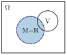
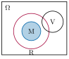
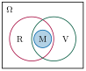
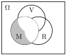
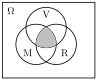
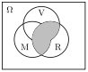
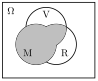

Aufgabe 2.6
Unter den Teilnehmern einer Versammlung wird eine Person zufällig ausgewählt. Folgende Ereignisse seien definiert: M: «Die ausgewählte Person ist männlich», R: «Die Person raucht», V: «Die Person ist verheiratet».
- Was bedeuten dann die Aussagen: $M = R$, $M \cap R = M$, $M\cap R \cap V = M$?
- Beschreiben Sie das Ereignis «Die ausgewählte Person ist männlich, sie raucht nicht und ist nicht verheiratet» mengenalgebraisch.
- Drücken Sie die Ereignisse $M \cap (R \cap V)$, $R \cap (V \cup M)$ und $(R \cap V) \cup M$ in Worten aus.
- $A = B$ bedeutet: Die Ereignisse A und B sind identisch (treffen für dieselben Personen zu)
- $A \cap B = A$ bedeutet: A ist eine Teilmenge von B (wenn A eintritt, tritt auch B ein)
- Beachten Sie die Reihenfolge der Operationen: Klammern zuerst!
- Übersetzen Sie schrittweise von innen nach außen
Teil (a): Interpretation der Gleichheiten mit Venn-Diagrammen
1. $M = R$: «Männlich = Raucher»: Die Menge der Männer ist identisch mit der Menge der Raucher.

Bedeutung:
- Jeder Mann in der Versammlung raucht
- Jeder Raucher ist ein Mann
- Keine rauchenden Frauen, keine nichtrauchenden Männer
Kurz: «Alle Männer sind Raucher und alle Raucher sind Männer.»
2. $M \cap R = M$: «Männlich und Raucher = Männlich»: M ist eine Teilmenge von R.

Bedeutung:
- Jeder Mann raucht
- Aber: Es können auch Frauen rauchen
- Die Eigenschaft «männlich» impliziert «Raucher»
Kurz: «Alle Männer rauchen.» (Über Frauen wird nichts ausgesagt!)
3. $M \cap R \cap V = M$: «Männlich und Raucher und Verheiratet = Männlich»: M ist eine Teilmenge von R und eine Teilmeng von V

Bedeutung:
- Jeder Mann raucht UND ist verheiratet
- Keine unverheirateten Männer
- Keine nichtrauchenden Männer
Kurz: «Jeder Mann raucht und ist verheiratet.»
Teil (b): Mengenalgebraische Beschreibung
«Die ausgewählte Person ist männlich, sie raucht nicht und ist nicht verheiratet»

Übersetzung schrittweise:
- «ist männlich»: $\in M$
- «raucht nicht»: $\in \overline{R}$
- «ist nicht verheiratet»: $\in \overline{V}$
- Alle drei Bedingungen: UND-Verknüpfung
Mengenalgebraisch: $$\boxed{M \cap \overline{R} \cap \overline{V}}$$
Teil (c): Sprachliche Interpretation mit Visualisierung
1. $M \cap (R \cap V)$

Dann: $M \cap (R \cap V)$ = «männlich und (raucht und ist verheiratet)»
In Worten: «Die ausgewählte Person ist männlich, raucht und ist verheiratet.»
2. $R \cap (V \cup M)$

Dann: $R \cap (V \cup M)$ = «raucht und (ist verheiratet oder männlich)»
In Worten: «Die Person raucht und ist entweder verheiratet oder männlich (oder beides).»
3. $(R \cap V) \cup M$

Dann: $(R \cap V) \cup M$ = «(raucht und ist verheiratet) oder männlich»
In Worten: «Die Person ist entweder männlich oder sie raucht und ist gleichzeitig verheiratet (oder beides).»